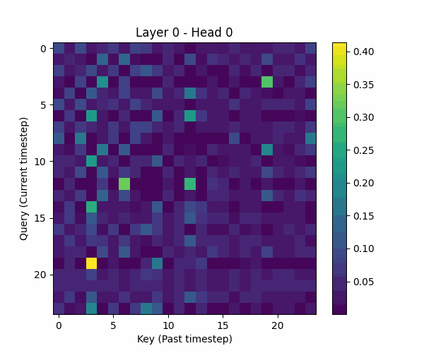

Transformer-based End-to-End ML System (Research → Deployment → Production)
This project extends a basic Transformer model into a production-ready forecasting system. It integrates deployment, real-time inference, interpretability, and robustness testing.
| Model | RMSE |
|---|---|
| Naive | 13.02 |
| ARIMA | 5.16 |
| LSTM | 3.97 |
| Transformer | 3.87 |
Transformer achieves the best performance, capturing temporal dependencies effectively.
Model cannot run outside PyTorch environment.
ONNX vs PyTorch diff: 2e-07 (numerically identical)
CoreML inference: ultra-fast
Deployment requires handling framework constraints beyond model training.
Transformer behaves as a black-box model.

Model learns meaningful temporal dependencies, validating its decision process.
Model designed for batch inference, not real-time systems.
Latency: 0.43 ms
Throughput: 2300 predictions/sec
Efficient memory and low latency are essential for real-time ML systems.
Unclear whether positional encoding improves performance.
| Encoding | Performance |
|---|---|
| None | Best |
| Sinusoidal | Good |
| ALiBi | Moderate |
| Learnable | Poor |
For this dataset, temporal patterns are captured by values alone — positional encoding is not always necessary.
Model must remain stable under noisy and adversarial inputs.
| Scenario | RMSE |
|---|---|
| Clean | 0.332 |
| Noise | 0.325 |
| Missing | 0.327 |
| FGSM | 0.341 |
Model is highly robust with minimal performance degradation.
This project transforms a basic Transformer into a complete ML system:
End-to-End Pipeline: Research → Deployment → Monitoring